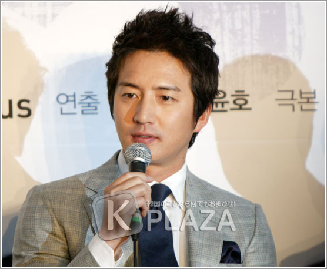
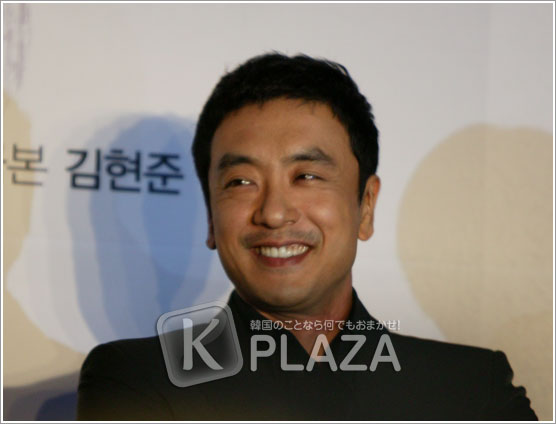
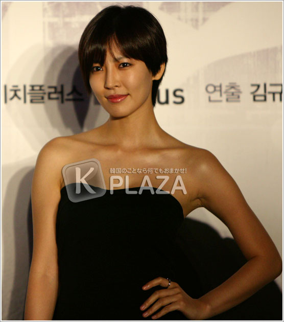

|
韓流スターイ・ビョンホンを始めとして、4年ぶりにブラウン管復帰するキム・テヒ、チョン・ジュ
ノ、キム・スンウ、キム・ソヨン、BIG BANGのT.O.Pの豪華キャストに、数百人の取材人及び、海外ファンが集まりました。
制作発表は、制作社であるテウォンエンターテイメント代表取締役の挨拶、ドラマ「アイリス」のメ
イキング映像、そして監督＆俳優の挨拶及び質疑応答の順で行われました。
司会：短
い映像ではありましたが、この映像でドラマ「アイリス」の撮影の大変さとスケールの大きさを知って頂けたと思います。ドラマ「アイリス」は、3月に日本の
秋田県で撮影を終え、6月にはハンガリーでの撮影の為、出国する予定です。制作費用は約200億ウォンが投資され、最大規模の撮影セットなど、見所も沢山
あり、世界中から注目を浴びているドラマ「アイリス」、そろそろ出演人の紹介及び、質疑応答の時間を持ちたいと思います。
一人ずつ紹介するたびに、盛大な拍手をお願い致します。
標的だけを除去する為に存在する冷血なアイリス所属のキラー「Ｂｉｇ」役のＴ．Ｏ．Ｐさんです。
続けて祖国に見捨てられ、ヒョンジュンに忠誠を尽くす北朝鮮の護衛
工作員キム・ソナ役のキム・ソヨンさん。柔らかくて鋭いカリスマが共存する北朝鮮最高の諜報要員パク・チョルヨン役のキム・スンウさん。友情と愛、そして
国家の命令の前で葛藤するNSSエリート要員ジン・サウ役のチョン・ジュノさん。知的で気の強い魅力で、二人の男を虜にするNSS最高のプロファイラー
チェ・スンヒ役のキム・テヒさん。天才的な頭脳と冷徹だが果敢な行動力を持つNSS特攻隊要員キム・ヒョンジュン役のイ・ビョンホンさん。そして、最後に
ドラマ「アイリス」の責任者である最高の演出者であるお二人を紹介します。キム・ギュテ監督とヤン・ユンホ監督です。
それでは、マイクを回しますので、監督と出演人の方々の挨拶と、キャラクター紹介の方お願い致します。それでは、キム・ギュテ監督からお願い致します。
キム監督：ア
ンニョンハセヨ。「アイリス」の演出を任されたキム・ギュテです。
司会：そ
れでは、ヤン監督お願い致します。
ヤン監督：ア
ンニョンハセヨ。ヤン・ユンホです。よろしくお願い致します。
イ・ビョンホン：ア
ンニョンハセヨ。キム・ヒョンジュン役のイ・ビョンホンです。
キム・テヒ：ア
ンニョンハセヨ。チェ・スンヒ役のキム・テヒです。

チョン・ジュノ：ア
ンニョンハセヨ。「アイリス」でジン・サウ役のチョン・ジュノです。

キム・スンウ：キ
ム・スンウです。パク・チョルヨン役です。

キム・ソヨン：ア
ンニョンハセヨ。キム・ソヨンです。キム・ソナ役を任されました。カムサハムニダ。
ＴＯＰ：ア
ンニョンハセヨ。Ｂｉｇ役のＴＯＰです。
司会：そ
れでは、本格的に質問をしていきたいと思います。まず、監督に質問したいと思います。「アイリス」の演出をしようと決心した理由は何でしょうか？
キム監督：最
初に提案された時、迷うことなく承諾しました。普段私が演出した作品は多くは無いですが、絶対にやってみたかったし、自身があったからです。また、出演人
も韓国最高の俳優達なので、最善を尽くしたいと思います。
司会：ヤ
ン監督も、理由があったと思いますが？
ヤン監督：「ア
イリス」については、色々と知っていました。個人的には、ドラマと映画は違うと思いますが、「アイリス」はやってみたいと思っていた時に、丁度機会ができ
たので…
司会：ヤ
ン監督は今まで主に映画の演出をされてきましたが、映画とドラマでは差があると思いますが、どういった所が違いますか？
ヤン監督：方
法が少し違うと思います。でも、何より映画は他人の人生を盗み見るといった感じで、ドラマは感情を沢山出すという感じがします。
司会：キ
ム監督に質問です。韓国初の最大規模のアクションドラマですが、どのようにこのブラックバスタードラマを演出するのでしょうか？
キム監督：こ
の作品は、既存のドラマと違い、映画的な条件を沢山使用する事ができる作品です。ですので、ドラマでは見られなかった映画的なアクションやディテイルなど
に力を入れました。しかし、これはドラマですので、俳優一人一人の呼吸が適切にマッチしなければならないと思います。ドラマは呼吸が大切なので、沢山の視
聴者が共に共感する事のできる人物の感情が伝わるような作品になればと思います。沢山の期待と関心をお願い致します。
司会：ありがとうございます。それでは、イ・ビョンホンさんに質問です。久しぶりのブラウン管復帰となりますが、今の気持ちは？
イ・ビョンホン：「オー
ルイン」以降初の作品となりますが、まず、「オールイン」が成功したので、次の作品も期待が大きく、負担でもありドラマの撮影が映画にくらべて余裕のある
撮影ではないので、肉体的にも精神的にもとても…追われるように撮影しなければならないと覚悟も決めたし、沢山期待して頂いているので、その期待を裏切ら
ないような作品を作らなければならないという気持ちです。
司会：次
は、キム・テヒさんに質問です。今まで主に女性らしく可愛らしい役をして来られましたが、今回はNSSの要員という役柄ですが、今までとは違った役柄をこ
なす為、どのような準備をされましたか？
キム・テヒ：NSS
の要員として、アクションシーンやとてもプロフェッショナルな姿を見せるため、アクションシーンの練習もし、少しですが減量ました。男性が体を作る程では
ありませんが、ストレスを受けないように食べたい物は食べて、運動も始めました。NSSの要員なので、仕事中はとても冷淡ですが、ドラマの中では魅力的な
部分も重要なので、一人の女性として恋する時は女性らしく可愛らしい姿を見せるつもりです。今までの役とまったく違うというよりは、NSSの要員として強
くカリスマのある姿を少し見せる事が出来るようです。
司会：あ
りがとうございます。次は、チョン・ジュノさんに質問です。ドラマの中で、イ・ビョンホンさんと葛
藤する役柄ですが、兄と弟としては大切な役柄と思いますが、チョン・ジュノさんの役柄の魅力
を紹介して下さい。
チョン・ジュノ：イ・
ビョンホンさんと私は、エリート要員で、一番仲の良い同僚であり、NSS要員の中では1,2位を争うライバルでもあります。一人の女性を置いて、二人の男
性が争う典型的なメロドラマでもありますが、二人の男性に正体を暴けない程のライバル意識も強く、その男性の魅力を盗むというキャラクターなので、キム・
テヒさんが悩まなければならないと思います。
司会：そ
れではキム・スンウさん、ジャンルは違いますが、ドラマ「内助の女王」の視人気を越える事が
できますよね？
キム・スンウ：今
日全国視聴率約31％…来週が最終回です！
司会：「内
助の女王」最後まで応援してください。（笑）それでは、キム・ソヨンさんに質問です。キム・テヒさんと同じく、今までのイメージとはまったく違う役柄です
が、どのような準備をされましたか？
キム・ソヨン：ま
ず、外見では髪を短くしました。キム・ソナのキャラクターが、短い方が似合うと思い、ばっさり切ってしまいました。今まで短くしたことがなかったからかも
しれませんが、短くしてキャラクターになりきれているような気がします。
司会：次
は、ＴＯＰさんに質問です。ドラマ出演に対する負担も大きい反面、期待も大きいと思いますが、ファンや記者の方々に、ドラマ出演に対する意気込みをお願い
します。
ＴＯＰ：最
初はとても不安でしたが、それが途中からは責任感に変わったと思います。出演人の中で末っ子ではありますが、自分の役を頑張ってこなして行きたいと思いま
す。先輩の方々も、横で力になってくれているので、頑張りたいと思います。
司会：あ
りがとうございます。それでは、記者の方々の質問を開始します。
質問：日
本での撮影で、一番記憶に残るシーンはありますか？
イ・ビョンホン：ま
ず、空港から始まり、ホテルなど行く先々に沢山のファンの方々か、早朝から夜中までずっと待ってくれて、常に先回りでした。どうやって情報を得たのか知り
ませんが、とりあえずファンに付いていくと撮影現場に到着って事もあったりで、撮影現場などにいつも2、300人のファンが先に来てくれて、こんなに沢山
のファンの前で撮影したのは始めてだと思います。今まで、市民の方が撮影中に集まる事はありましたが、ファンの方がこんなに集まるのは本当に初めてでし
た。面白いエピソードは、一日時間が空いたので、マネージャーと一緒に夜に温泉に行ったのですが、おばちゃん達が同じ露天風呂に入ってきました。でも、湯
気が濃くて、どうにかばれずにすみました。日本に混浴のお風呂があるという話しは聞いていましたが、いざ混浴の露天風呂に入ると、文化の違いを実感する事
が出来る良い経験でした。
司会：屋
外の日本人ファンの皆様に、挨拶お願いします。
イ・ビョンホン：声
も聞こえますか？
司会：は
い、聞こえます。笑
イ・ビョンホン：遠
いところからここまで来て頂いてありがとうございます。皆様が遠くまで来て苦労した以上に、僕ももっと苦労して良い作品を作りたいと思います。カムサハム
ニダ。
質問：BIG
BANGも日本で少しずつ人気が出ていますが、今回は歌手ではなく俳優に挑戦するＴＯＰさんの意気込みをお願いします。
ＴＯＰ：2007
年に「アイ
アム・サム」というドラマで初めて演技に挑戦しましたが、今回はキラー役として沢山の変化が必要だと思います。演技を一つ一つ学びながら頑張っているの
で、新しい姿を見る事ができると思いますので、期待して下さい…すみません、とても緊張しているので…。（笑）
司会：そ
れでは、緊張をほぐす為に一つだけ質問しますね。冷酷なキラー役ですよね？目標の為に冷酷にこなしていくというキャラクターですが、難しかった事は？
ＴＯＰ：ん〜…
沢山ありますね…（笑）僕が、見た目よりはとても弱いと思うのですが…（笑）なので…沢山研究しました。
司会：そ
れでは、心弱いＴＯＰさんの冷酷な演技期待したいと思います。
質問：過激なアクションシーンが多いようですが、大変だった事は？
キム・テヒ：実
はまだアクションシーンはあまり撮影できていません。メイキング映像でご覧頂いたのは、セット場での練習場面でしたので…女性同士で戦う姿は、新しい感じ
の映像なので、私達も努力しています。これからアクションシーンの撮影が増えると思うので、怪我しないように頑張りたいと思います。
キム・ソヨン：私
は、日本での撮影の最後に1.5Ｍの高さから飛び降りるシーンがあったのですが、監督は危ないので階段から下りて来いとおっしゃったのですが、運動もして
きたしと思い、飛び降りれそうな感じがしたので、飛び降りたのですが、靱帯が切れて骨が折れてしまいました。日本でギブスをしてからギブスを外してまだ、
何日も経っていません。なので、また一生懸命運動します。
司会：す
ごい覚悟での撮影ですね。メイキングを見ると、イ・ビョンホンさんのワイヤーを使ったアクションが公開されましたが、ワイヤーアクションはどうでしたか？
イ・ビョンホン：や
はり安全装置をした状態だったので、安全です。でも、最初は高さが約130Ｍの高さに吊らされた時、安全装置はあるけれども、視覚的に緊張させるのは確か
です。これは本当に、頑張ろうという思いと、お願いだから無事に終わってくれという心配もしました。
司会：チョ
ン・ジュノさんは、作品に入る前、シン・ヒョンジュンさんと相談したと聞きましたが？
チョン・ジュノ：（笑）
今回も、シン・ヒョンジュンさんがカメオ出演をしてくれる予定だったのですが、制作者の方々と相談をして、普通はカメオ出演をしたら、視聴率が上がらなけ
ればならないのに、シン・ヒョンジュンさんが出演すると、視聴率がもっと悪くなるのではないかと思い…（笑）冗談です…本当の所そうですが。（笑）撮影が
終わって間もないので、好意はありがたいですが、次回にという事で…スケジュール調整して下さいとお酒を飲みながら冗談で言ってました。
司会：キ
ム・スンウさんに質問です。北朝鮮の工作員役という事ですが、今までは北朝鮮役は典型的なスタイルでしたが？
キム・スンウ：一
般的なイメージを壊そうと、監督や作家と話をしました。私もこの役を聞いた時、直接北朝鮮の方言を習いたかったし、どんな姿が一番適しているのか悩みまし
たが、実際に北朝鮮のエリート工作員は、標準語を使い、僕のようにかっこ良く…何でこんなに反応が悪いんだ！！
2人くらいは笑うと思ったのに…（笑）とりあえず…幼いころから西部映画に慣れているので、みなさんが今まで思っていた北朝鮮の人とは違う姿、そして強い
男の姿をお見せします。
司会：「ア
イリス」世界に通じるのであれば、どんな魅力があるからなのか、一人ずつお願いします。
イ・ビョンホン：僕
がこのドラマを選んだ理由でもありますが、スパイ映画がまともに作られたのは、今回が初めてと思います。南北で分断した状態である国が作った作品がどんな
のかが気になるし、他の国で作ったスパイ映画で作られた作品とは違った作品となるのではないでしょうか。
司会：こ
の質問に付いては、監督に答えて頂きましょう。
ヤン監督：私
達がまだ活用しきれていない内容が南北問題と思います。世界中の関心が集まる部分でもありますが、これが実際の政治状況や軍事状況ではなく、ドラマの中の
話なので、それ自体で企画者の立場として世界が注目すると思います。
司会：南
と北の特別な状況による、愛国心を土台とする息の詰まる対決が期待されます。続いて、キム・テヒさんに質問です。二人の男性の愛を同時に受ける役ですが、
どうでしたか？
キム・テヒ：秋
田で初撮影をしましたが、日本での撮影は殆どメロの撮影しかありませんでした。初めての共演なのに、愛情シーンが多く、とても負担でした。でも、先輩方の
お陰で、無事終える事が出来ました。
キム・スンウ：個
人的にキム・テヒさんに質問させて下さい。イ・ビョンホンさんとチョン・ジュノさんのうち、理想に近いのはどっちですか？
司会：私
も気になっていたのに…センスありますね。（笑）
キム・テヒ：難
しいしつもんですね…（笑）真剣に悩んでしまいますね…初のミーティングで、大先輩達の前でとても気が重かったのですが、いざ行ってみるととても気楽でし
た。
キム・スンウ：い
や、誰が理想のタイプに近いのか…
司会：キ
ム・スンウさんと答えた方が、丸く収まると思いますね。
キム・テヒ：あ
りふれた答えかと思い、その答えは避けようと思ったけど…実はキム・スンウ先輩が私の理想のタイプです。
司会：あ
りがとうございます。キム・テヒさんとは打って変わって、キム・ソヨンさんは悲しい恋をするのようですが、それにより一層魅力的な役となるのでは？
キム・ソヨン：キ
ム・ソナという役が、ありふれたキャラクターでもなく、魅力溢れるキャラクターだと思います。
司会：南
と北に関するドラマですが、普段から政治に関心のあるチョン・ジュノさんの、ドラマに関する感想は？
チョン・ジュノ：毎
朝新聞を読むので…このドラマの一番の見所は、世界で唯一南北分断国家であり、イ・ビョンホンさんを筆頭とした韓流スターが、アジアや世界が関心を寄せる
俳優の出演という事もあり、ドラマの関心も集まるのではないかと思います。今は南北関係が停滞していますが、このドラマが公開される頃には、南北関係も改
善していると思います。
質問：4
人の男性のうち、一番カリスマ溢れる男性は誰ですか？
キム・ソヨン：私
は個人的に、キム・スンウ先輩です。画面やセリフなどを見ての意見です。…みんなカッコいいです〜。
司会：キ
ム・テヒさんもやはり、キム・スンウさん？
キム・テヒ：メ
イキングをご覧頂いたと思いますが、本当に4人ともかっこいいと思います。
司会：ＴＯＰ
さんが、俳優としてのカリスマを見せるため、どのような努力をしましたか？
ＴＯＰ：…
質問が難しいですね…
司会：表
情の練習とかしますか？
ＴＯＰ：い
え…それはしません…
司会：そ
れでは、ＴＯＰさんのカリスマは、産まれ持ってのものという事で纏めたいと思います。（笑）続いて、唯一の既婚者であるキム・スンウさん、海外ロケや撮影
で、家で心配が耐えないと思いますが、「内助の女王」はどのような内助をしてくれますか？
キム・スンウ：（笑）
あ〜まったく…一応…（笑）…何て質問を！！
司会：内
助の女王ですもの。（笑）
キム・スンウ：頑
張れ…ん…頑張りますよ…
司会：内
助の女王は激励で内助をしているそうです。
質問：さっ
きからＴＯＰさんを見ていると、目玉しか動いておらず、とても緊張しているようですが、撮影現場での先輩達はどうですか？本当は、一番怖い先輩を聞こうと
思ったのですが、応えられないと思い…
ＴＯＰ：本
当にそんな方はいません。とても良い経験話を聞いたり、勉強になります。
質問：二
人のうち誰が理想のお姉さんですか？
ＴＯＰ：二
人とも理想に近いです。
司会：BIG
BANGのメンバーは何と言っていましたか？
ＴＯＰ：現
場の雰囲気が気になるみたいです。僕たちは、いつも話題が似たり寄ったりですね。お互いを知り尽くしているので…あ〜…今日本当にしゃべれないですね…
（照）
質問：さっ
きから水を沢山飲んでいますが、元から沢山飲むのですか？
チョン・ジュノ：昨
日キム・スンウさんが飲みすぎて…僕も少し…イ・ビョンホンさんは1人で家でワインを飲んで…イ・ビョンホンさんがインタビューやファンミーティングでワ
インが好きだと言ったみたいで、ファンの方々がプレゼントしてくれたみたいで、何百本もあります。でも、僕の家には、酒しかありません。前にインタビュー
で日本のお酒が好きと言って、それからずっとお酒のプレゼントばかり…
キム・スンウ：で
も、ワインやお酒は良いじゃないですか。僕は前に日本の箸が良いと言って、箸のプレゼントばかりです。（笑）これからは円が好きだと言おうと思います。円
の絵が可愛いというと、お金のプレゼントをもらえそうで。（笑）
司会：繰
り返します。キム・スンウさんは紙幣を収集しています。
それでは最後に、ヤン監督から締めの挨拶お願いします。
ヤン監督：沢
山相談して沢山悩んで、期待を裏切らない作品を作りたいと思います。よろしくお願いします。
イ・ビョンホン：映
画は普通撮影を終えて編集も終えた段階で制作発表をするのですが、こうやって終わっていない段階で発表するのはとても負担と責任感を感じ、沢山集まって頂
きありがたくもあり不安も沢山ですが、最後まで努力します。
キム・テヒ：4
年ぶりのドラマとなり、心配でもありますが、最後まで頑張るので見守って下さい。
チョン・ジュノ：「ア
イリス」に関心を寄せて頂きありがとうございます。最後まで声援お願い致します。今日、日本からもわざわざお越し頂いたファンの方々にも、もう一度感謝し
ます。
キム・スンウ：期
待して頂いた分、もっと頑張りたいと思います。韓国での新しい作品となるように努力します。よろしくお願いします。
キム・ソヨン：北
朝鮮の工作員の演技をしながら、ジェットコースターに乗った時の様な爽快感を感じています。皆様もこの爽快感を味わえると思います。期待してください。
ＴＯＰ：舞
台だけでなくブラウン管を通じて、新鮮な姿を見せる事が出来ると思います。そして、皆様の期待に応えられるように頑張ります。カムサハムニダ。
司会：あ
りがとうございます。それでは、制作発表を終わりたいと終わります。
|